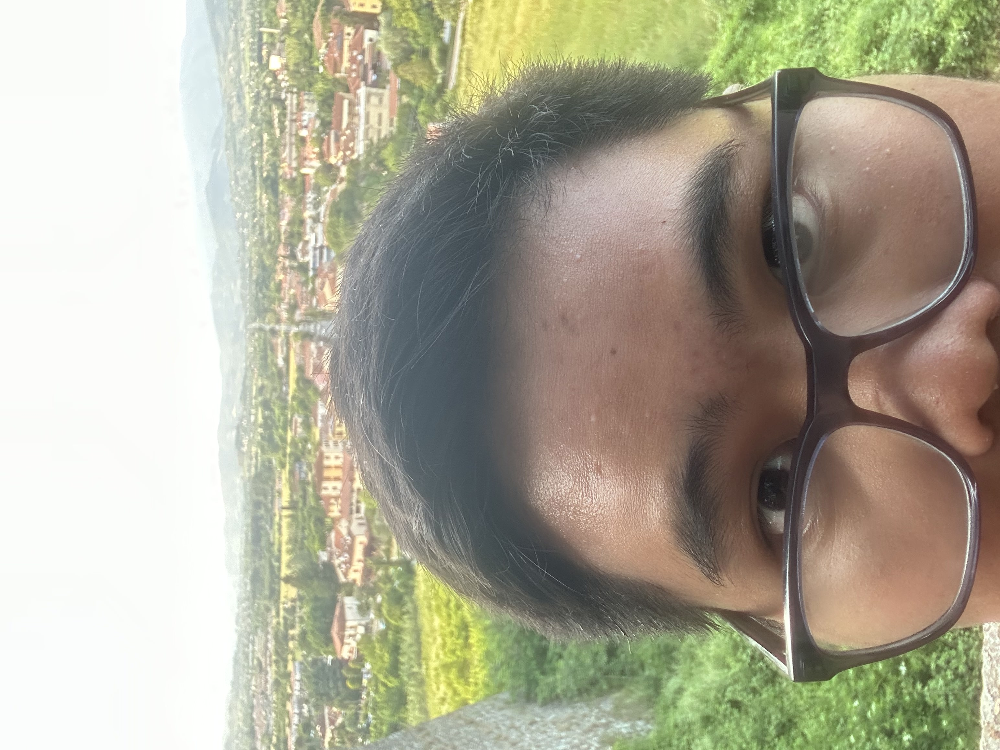
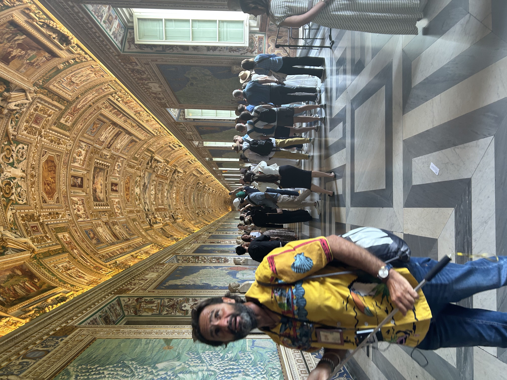
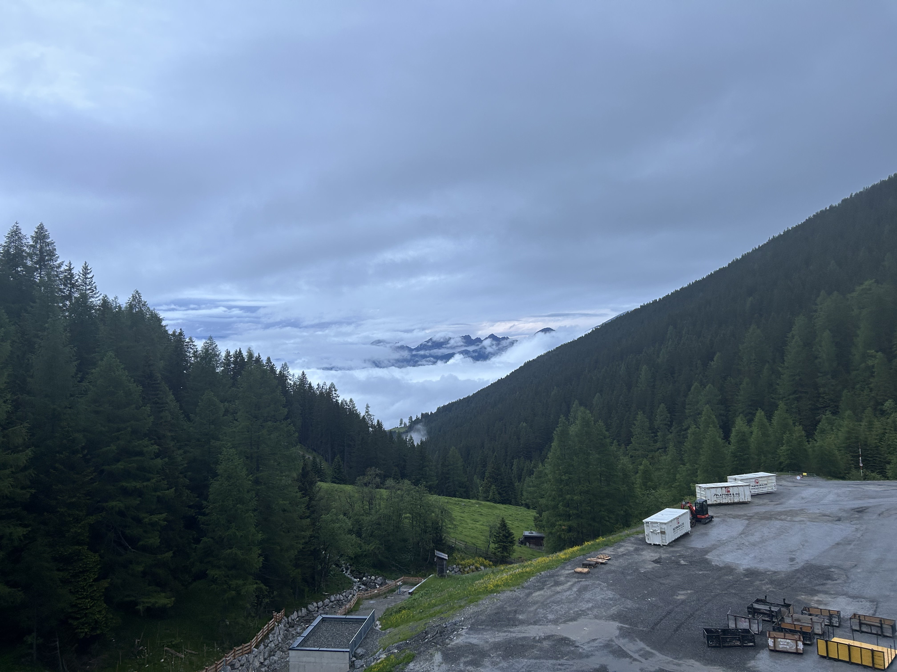
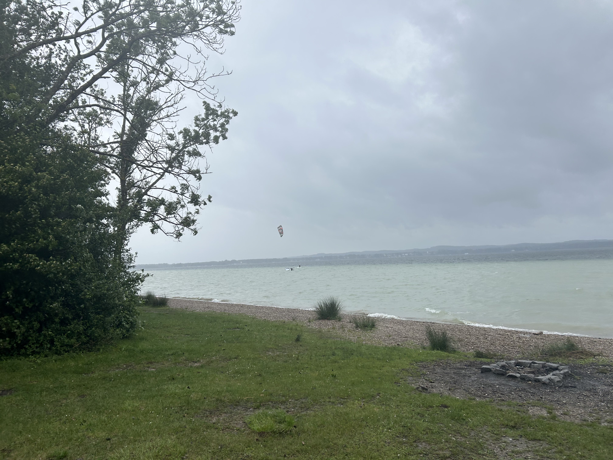
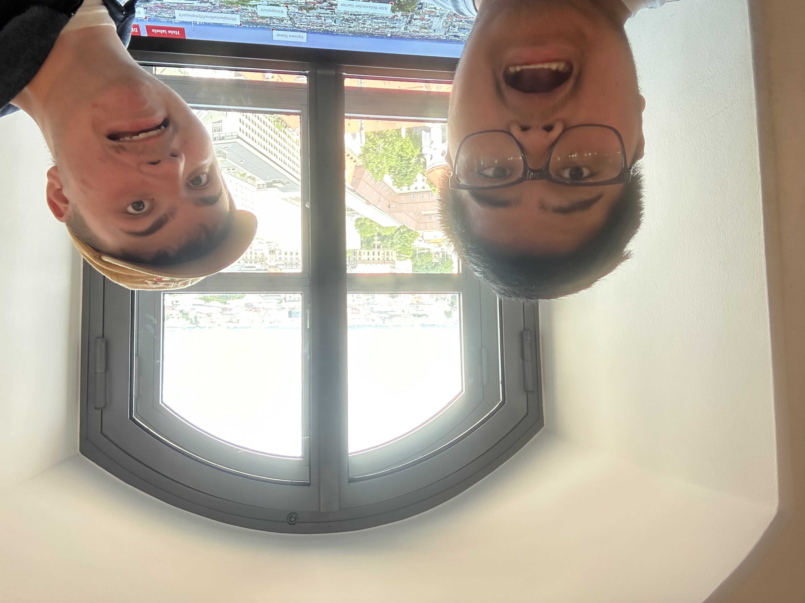
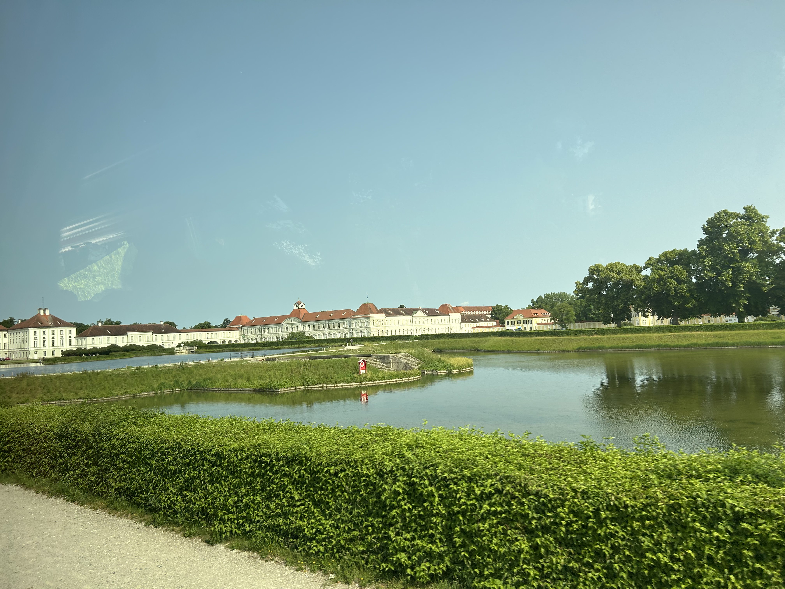
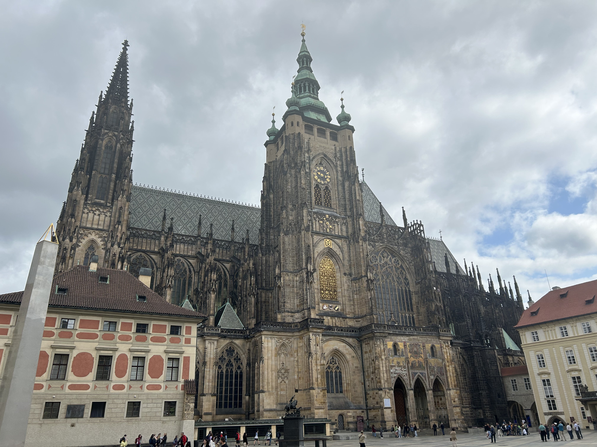

Italy
The first country in the tour I took was Italy. We started in Rome and made our up north. Southern Italy was teeming with scammers. People trying to put bracelets on you and others "giving" out water. Be careful on every step from Rome to Florence (including Florence).
If that is what I took from Italy I would be disappointed. The pizza is fulfilling, not stuffed and greasy, so I feel I could eat it whenever, whether lunch or breakfast. Southern Italy has been well preserved for its many historical monuments, and they are not afraid to show this. Past the mountains, into the north, it is much more modern. I enjoyed the modern feel much more. And into the Alps we went.
Austria
Austria was frankly breathtaking. Putting images to reality put me in my place. I haven't really explored much of America, so mountains are still foreign to me. I got to stay in a inn, high up in the mountains. There were cows with bells around their neck, and it truly sounded and felt like videos you might see of it. What a site to see!
We only spent a day in Austria. One night at in the mountains with some hiking, but the only monument to be seen was an Olympic Ski Jump. We even got to see an Olympic Trainee do one!
I will say, the service you get a restaurant is way more direct. I think as a foreigner, there is a good chance of being avoided. It's honestly fine. In the other countries, you would be somewhat pandered to due to tips and the such. Austria is a much smaller world in that sense, and more isolated. Before reaching our stop in Germany, we stopped at the shores. It was raining, but I luckily was going around with a raincoat. Lovely site.
Germany - Munich
I felt it unfair to think of Munich as Germany only Austria and Czechia are small, and we spent half the trip in Italy (Five Days). To add to that, Munich seems to be a more lively version of Germany you might think of (Can't really prove this true). Outgoing and beer loving is part of their culture. As we were traveling, I saw the fields of Germany and many smaller towns. More isolated from the rest, I could see the old architecture of the time. I enjoyed the touring of Germany the most. The tour was on Whet Monday, a Christian holiday, so empty roads for the most part. And the history is something I felt more drawn towards. The telling of the fall of one of their "kings" (Can't fully remember) due to a love interest was so fantastical. But, I guess thats how the quote goes, "Reality is stranger than Fiction".
The plan was to visit a concentration camp from WWII, Dachau, in the evening of the second day staying. To the distress of the tour guide, it was not happening due to Whet Monday. So we went to a park of sorts. People were playing Volleyball and other small team activity sports there. I watched as some of the group I walked around with in the park used a spare set from a local group who were there to play spikeball. I think Munich was closest to home out of all the places we visited. Smiles weren't a rarity to be had.
And so, on the day of entering Czechia, we visited Dachau first. In all honesty, there is not much to say. These Atrocities are so far behind us all as a group of highschoolers and that is a good thing. Nonetheless, sites like these need to exist as a reminder, a memory, and soon to heal wound that will walk it's course.
Czechia
First stop in Czechia, a currency exchange place. Czechia has it's money that us foreigners liked to call "crowns". This is the most recent of the countries in regard to history. Some know it as Czechoslovakia. Things are different though. Maps are old and Czechia is new. However, it seems to have nicely retained its older architecture. Massive buildings, and awkward roads are there. It is an adapting place. Gothic is how I would describe the historical monuments. Aggressive architecture is prominent in the more castle side.
The person who I traveled with liked their history. A shop he and I visited had an old Russian tanker helmet. He didn't buy it due to the price. I still feel like it was a scam but maybe my worries are misdirected. Afterall, I nearly "lost" my phone on the food tray of the travel coach in Munich. I was tired, homesick likely. Still, the city of Prauge is beautiful.
Retrospective
I enjoy my peaceful, monotonous days. To do this again would be a pain. Classmates I knew were there to liven things up. I bought many souveniers, the fond of which were the snow globe variety. There is a particular type of these snow globes that light up and they were the best. I think I did the best I would allow myself to enjoy on the trip. Before the trip, I was really disliked the idea. Again, I was content with the way things were and felt the trip was not going to spark anything. Do I agree with this? Perhaps. It broke up my routine for the summer, and I ended up not doing much for the rest of it. Not sleeping so late took a while to get back into. I could have focused more on making my game or playing instruments. I fear it is easy to say that I could still do those things after the trip, but for me it is a routine or a flow of sorts. Even so, I took many pictures. Real life experiences will shape my future. I don't plan to regret what is done and hope I can use this to broaden my horizons. So yes, maybe something did spark in my head on the trip.